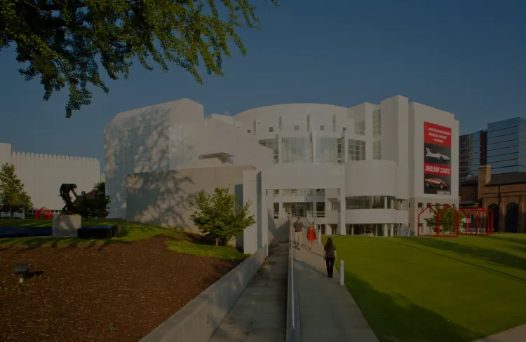

High Museum of Art
Fondation Cartier
Dominant le paysage urbain d'Atlanta de sa silhouette imposante, le High Museum of Art s'érige comme un symbole culturel éblouissant. Conçu par l'architecte renommé Richard Meier, ce musée incarne la fusion magistrale entre l'art contemporain et l'architecture avant-gardiste.
par Viktor Ghirardelli
Publié aujourd’hui | Temps de lecture 1 min
Genèse et Réalisation
L'aventure du High Museum of Art commence avec une vision audacieuse d'élargir l'horizon culturel d'Atlanta. En 1983, Richard Meier dévoile son chef-d'œuvre architectural, offrant une toile de fond spectaculaire à la collection d'art contemporain du musée.
Les lignes épurées, les formes géométriques distinctes et l'utilisation judicieuse de la lumière définissent l'esthétique unique du High Museum.
Description Visuelle et Emplacement
Situé au cœur de Midtown Atlanta, le High Museum of Art se distingue par ses façades blanches éclatantes et ses volumes architecturaux qui s'entremêlent de manière harmonieuse. Les larges baies vitrées et les surfaces réfléchissantes créent une interaction dynamique entre l'intérieur et l'extérieur, offrant aux visiteurs une expérience visuelle immersive.
Les espaces intérieurs du musée sont conçus avec une flexibilité remarquable pour accueillir une variété d'expositions et d'événements culturels. Les salles d'exposition baignées de lumière naturelle mettent en valeur les œuvres d'art de manière captivante, créant une atmosphère propice à la découverte artistique.
Galerie
Découvrez le High Museum of Art conçu par Richard Meier en explorant cette galerie d'images détaillée.